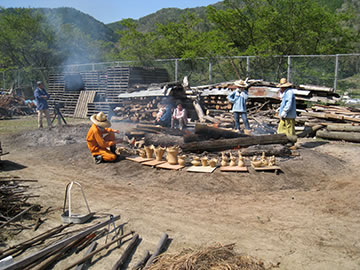
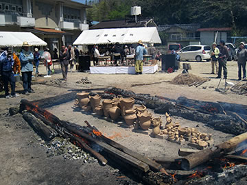

― これまでのイベント（記録） ―
| （画像をクリックで拡大します） |
「第１６回春の縄文野焼き祭り」当日は最高の縄文野焼き日和でした。
津軽三味線の響きわたる会場で、燃え盛る縄文の炎は最高潮に！
４月２８日日曜日、芽吹いたばかりの新緑の山々に囲まれた猪風来美術館前広場では、絶好の野焼き日和のもと
「第１６回春の縄文野焼き祭り」が開催されました。
冬期から春先にかけて作り乾燥させた、陶芸教室生や法曽焼同好会員、猪風来作品などあわせて６０点以上の
土器や土偶がこの日焼き上げられました。
|  | |
| （画像をクリックで拡大します） | |
日本古来の文化的根源として世界的に注目されている「縄文」に興味と魅力を感じる人びとが増えています。
その流れの中で際だっているのが、縄文の心と技を今の世に甦らせ、独自の縄文造形作品を創作し世界に発信
する猪風来美術館の活動です。
恒例の「縄文野焼き祭り」は焼物の原点として、そして自然に依拠した縄文の心を体得できる場です。
太陽や風を全身で浴びながら、炎の熱さを感じ、土を触り、土器の料理を味わい、そして焼物に命がやどり
焼き上がっていくのを実感できます。
|  | |
| （画像をクリックで拡大します） | |
この日は天候にも恵まれ、多くの縄文大好きな方たちが足を運んでくださいました。
岡山県内はもとより広島・大阪・兵庫、遠くは東京・熊本からと広域から人達がつどい、縄文野焼きの迫力に
感動していました。
野焼きスタッフは好天の下で、炎の中汗まみれになって奮闘。
最後には大きな火柱が何度も昇り、ついに焼き上がりとなりました。

|
|
| （画像をクリックで拡大します） | |
=∴=∵=∴=∵=∴=∵=∴=∵=∴=∵=∴=∵=∴=∵=∴=∵=∴=∵=∴=∵=∴=∵=∴=∵=∴=∵=∴=
《縄文体験コーナー》
「縄文土器煮炊き」で作ったのは岩手の郷土料理“まめぶ汁”。
野菜やきのこやとうふの汁の中に、くるみと黒砂糖の入った団子が浮かんでいます。
みんなで土器料理の豪快さを堪能。とても人気を集め、大きな土器に溢れんばかりの汁はあっという間に
なくなりました。
| （画像をクリックで拡大します） | |
「粘土でつくろう」では思い思いに土をひねり、縄目をつけたら縄文オブジェの出来上がりです。
参加者は丁寧に縄目を施し、渦巻き文様付きの可愛い土器やお腹の大きな祈りの土偶などができました。
「石で勾玉つくり」ではヤスリで丹念に石を削り、ピンクの勾玉が首飾りになって子どもの胸に揺れます。

|
|
| （画像をクリックで拡大します） | |
=∴=∵=∴=∵=∴=∵=∴=∵=∴=∵=∴=∵=∴=∵=∴=∵=∴=∵=∴=∵=∴=∵=∴=∵=∴=∵=∴=
《販売コーナー》
法曽焼同好会員の手で美味しい手打ちうどんと飲物が販売されました。
特製いのししカレーは無料で提供され、うどんにかけてカレーうどんに。
また、地元の産品の法曽茶と法曽焼（湯呑み・ビアグラス・マグカップ）の販売も好評でした。
| （画像をクリックで拡大します） | |
=∴=∵=∴=∵=∴=∵=∴=∵=∴=∵=∴=∵=∴=∵=∴=∵=∴=∵=∴=∵=∴=∵=∴=∵=∴=∵=∴=
《野外ライブ》
大内清野氏の津軽古流三味線が縄文野焼きの炎と競演しました。
青森出身の大内氏は、木訥な語りと津軽三味線特有の激しくも美しい旋律とを織り交ぜながら好演。
津軽三味線のルーツ（厳しい風土の土地を門付けしてまわった坊様(ぼさま)の三味線）を彷彿とさせる、
野外での縄文野焼きの炎と熱、火がはぜる音と三味線のコラボレーションとなりました。
野焼きの火が燃え盛る時、三味線の旋律に合わせて縄文の炎が踊っているように感じました。
| （画像をクリックで拡大します） | |
=∴=∵=∴=∵=∴=∵=∴=∵=∴=∵=∴=∵=∴=∵=∴=∵=∴=∵=∴=∵=∴=∵=∴=∵=∴=∵=∴=
| 【第１６回「春の縄文野焼き祭り」チラシ】 →（表面）PDF版を開く →（裏面）PDF版を開く |